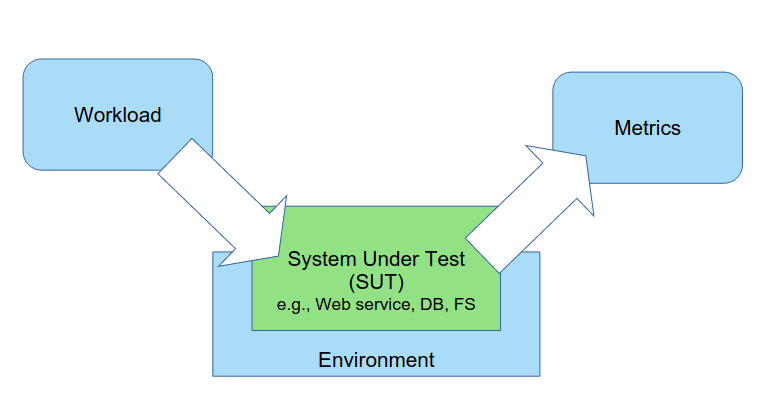
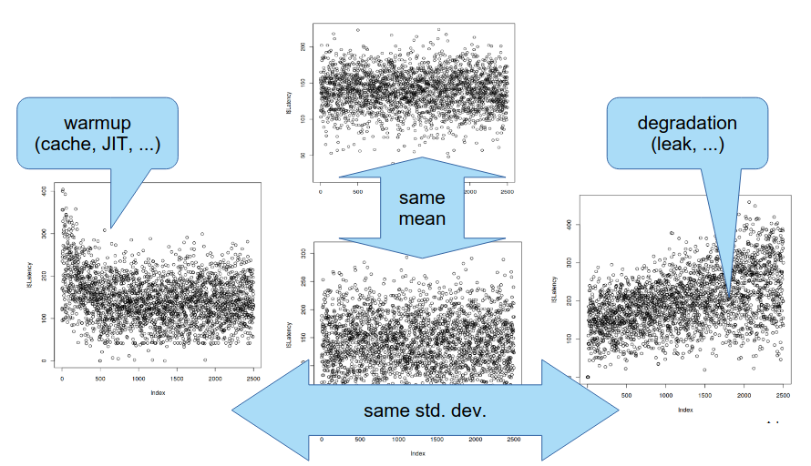
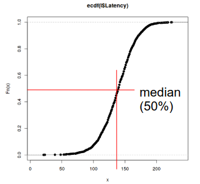

Teórica 10
Benchmarking (Avaliação)
- O sistema a ser avaliado é denominado SUT (System Under Test).
- Componentes base de uma ferramenta de benchmarking
- Workload (Carga);
- Ambiente;
- Métricas.

Carga
- A grande questão reduz-se à quantidade de carga que se deverá induzir ao sistema;
- Além disso, surge ainda a questão de qual será a maneira mais correta de induzir carga ao sistema. Para esta questão, tem-se diversas opções:
- Colocar a alicação em produção e testar lá;
- No entanto, geralmente, não queremos testar com a aplicação já em produção.
- Utilizar dados e pedidos que simulam ações reais dos utilizadores. A isto é chamado trace;
- É difícil ter um trace real da aplicação;
- É difícil de escalar.
- Gerar pedidos sintéticos.
- Seleciona um subconjunto de operações;
- Gera parâmetros aleatórios;
- Não uniformes (
Zipf).
- Não uniformes (
- Agenda pedidos;
- Concorrentes;
- Com tempo inter-arrival (exponencial).
- O problema desta abordagem é que é tudo artificial...
- Colocar a alicação em produção e testar lá;
- A escolha da maneira que deve induzir carga irá depender daquilo que queremos testar e da aplicação em questão.
Ambiente
- Devemos perceber o que temos a nível de hardware e software no ambiente em que estamos a testar.
- Devemos perguntar o ambiente que está a ser utilizado fará sentido para uma utilização da aplicação em produção.
Métricas
- Existem múltiplos tipos de métrica, poderá ser o desempenho da velocidade de resposta, se as respostas dadas pelo sistemas estão corretas, etc...
Desempenho
- Tempo de Resposta (latência): intervalo entre os pedidos do utilizador e a resposta do sistema;
- À medida que se vai aumentando a carga, é expectável que a latência aumente.
- Débito: taxa a que os pedidos são respondidos (p.e. "consegue responder a 30 pedidos por segundo").
Atenção: o débito e a latência não são, necessariamente, inversos. Isto só acontece quando o sistema estiver 100% ocupado e for sequencial.
Outras métricas
- Utilização:
- Recursos (p.e. CPU, RAM, Rede, Disco).
- Eficiência:
- Rácio entre o débito e a utilização.
- Resiliência:
- Erros.
- Disponibilidade:
- Uptime vs Downtime.
Medições
- Não podemos representar todas as amostras num único número?
- Por exemplo, na média? Depende do que queremos! A média pode enganar devido a picos;
- Por exemplo, no desvio padrão? Depende do que queremos! Pode enganar e termos uma perceção errada do sistema...
Amostras vs Tempo
- Devemos representar cada amostra de forma individual.

Amostras vs Frequência
- Representar a frequência de cada resultado;
- Utilizar histogramas;
- Permitir analisar modas, simetrias, etc...
- Empirical Cumulative Distribution Function (ECDF);
- Permite analisar médias, percentis, quartis, etc...

- As ECDFs permitem ainda termos uma comparação direta entre distribuições, bastando juntar as ECDFs de ambas num único gráfico.
Padrões das ECDFs:
Long Tail: Causado por, por exemplo, paragens no garbage collector.

Bimodal: causado, por exemplo, por if statements.

Conclusões da Amostragem
- Permitem ver médias, modas, medianas ou grandes percentis;
- Permitem medir o intervalo de confiança (CI);
- Permitem medir o coeficiente de variação (CV).
- \[ \frac{desvio\ padrao}{media} \], geralmente, expresso em %.
Ferramentas
- Existem ferramentas que permitem gerar carga e amostragens;
- Além disso, podemos também utilizar ferramentas para a análise de dados.
Erros Comuns
- Não ter objetivos ou ter objetivos enviesados;
- Ter uma abordagem não sistemática;
- Devemos ter scripts de tudo, correr sempre tudo no mesmo ambiente, correr múltiplas vezes os mesmos testes, etc...
- Cargas de trabalho não representativas da utilização real da aplicação;
- Fazer uma análise à apresentação de resultados incorreta.
Conclusões
- Existem múltiplas dimensões para a avaliação de um sistema;
- Para avaliar um sistema, devemos:
- Avaliar ao longo do tempo;
- Ter em conta que o sobreaquecimento de componentes pode acontecer;
- Repetir, múltiplas vezes, os mesmos testes.